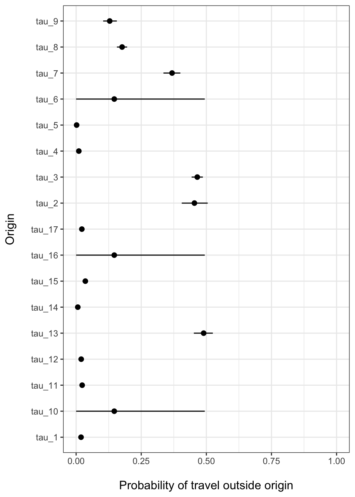

V3_travel_probability.RmdThe travel probability model requires two pieces of information: the number of trips for the time interval that travel outside the origin location (\(y_i\)) and the total number of trips observed for that origin (\(m_i\)). Both vectors must be the same length but they can have missing values (NA) that represent an unobserved origin location. The get_stay_data() function can be used to build trips for each location that are aggregated to a desired spatial scale (e.g. admin level 1 or admin level 2).
stay_data <- get_stay_data(travel_data_sim, agg_adm=2) #> Added missing unique location names. #> Using total trip count method y <- setNames(stay_data$travel, stay_data$orig_id) m <- setNames(stay_data$total, stay_data$orig_id) n_orig <- length(y) miss <- sample(1:n_orig, n_orig*0.2) # missing observations y[miss] <- m[miss] <- NA y #> A_B_C A_B_D A_B_E A_B_G A_B_H A_B_I A_B_J A_B_K A_B_N A_B_O A_B_Q A_B_R A_B_S #> 21 176 904 5 0 NA 331 250 74 NA 36 23 346 #> A_B_T A_B_V A_B_Y A_B_Z #> 6 44 NA 26 m #> A_B_C A_B_D A_B_E A_B_G A_B_H A_B_I A_B_J A_B_K A_B_N A_B_O A_B_Q A_B_R A_B_S #> 1150 384 1941 531 322 NA 896 1421 577 NA 1593 1217 703 #> A_B_T A_B_V A_B_Y A_B_Z #> 1035 1254 NA 1218
To estimate the probability of traveling outside the origin location \(i\), the fit_prob_travel() function uses a Beta-Binomial model with hierarchical structure to infer travel probability in unobserved locations. \[
y_i \sim \text{Binom}(\tau_i, m_i)
\] The random variable \(y_i\) is the observed number of trips that leave origin \(i\) within the time interval. Binomial parameters \(\tau_i\) and \(m_i\) are the success probability and total number of observed trips emanating from origin \(i\) respectively. \[
\begin{aligned}
\tau_i &\sim \text{Beta}(\alpha, \beta) \\
\tau_\text{pop} &\sim \text{Beta}(\bar{\alpha}, \bar{\beta})
\end{aligned}
\] Binomial probabilities for each origin \(\tau_i\) are drawn from a Beta distributed prior with shape and rate parameters \(\alpha\) and \(\beta\). The hierarchical structure comes from estimating \(\alpha\) and \(\beta\) as population-level hyper-priors for the origin-level probabilities \(\tau_i\) and allowing \(\tau_\text{pop}\) to inherit the overall population-level distribution denoted as \(\bar{\alpha}\) and \(\bar{\beta}\). \[
\begin{aligned}
\alpha &\sim \text{Gamma}(1,0.1) \\
\beta &\sim \text{Gamma}(1,0.1)
\end{aligned}
\]
This structure allows origin locations to have probabilities \(\tau_i\) which are driven by data in each location and all unobserved locations regress to the population mean \(\tau_\text{pop}\).
prob_trav <- summarize_mobility( fit_prob_travel(travel=y, total=m) ) #> These missing locations will inherit population mean: #> A_B_I A_B_O A_B_Y #> Compiling model graph #> Resolving undeclared variables #> Allocating nodes #> Graph information: #> Observed stochastic nodes: 14 #> Unobserved stochastic nodes: 17 #> Total graph size: 50 #> #> Initializing model #> #> NOTE: Stopping adaptation

There can be relatively large confidence intervals around the travel probability estimated for locations without data. Since these locations inherit the population-level mean, uncertainty will likely be higher than locations with data. If we wanted to then use this model in a simulation, we may want to include this uncertainty in the model.
The sim_prob_travel() function can be used to simulate values of travel probability for each location. Each time the function is called, it returns one random realization for each location.
# Simulate n realizations of travel probability for each location sim_prob_travel(mu=prob_trav$Mean, sigma=prob_trav$SD, id=names(y), n=5) #> [,1] [,2] [,3] [,4] [,5] #> A_B_C 0.0207861441 0.021168607 1.644272e-02 0.016554523 0.016483609 #> A_B_D 0.4277232358 0.440310618 4.242626e-01 0.431278274 0.456055333 #> A_B_E 0.4780164718 0.463763229 4.585539e-01 0.453075586 0.454119677 #> A_B_G 0.0110732026 0.008118388 8.327714e-03 0.013020769 0.007309064 #> A_B_H 0.0002789364 0.001977871 4.178062e-05 0.009017735 0.004939276 #> A_B_I 0.0014950266 0.284679678 4.555513e-01 0.500753926 0.218019697 #> A_B_J 0.3791371000 0.403707310 3.535542e-01 0.402605795 0.345591402 #> A_B_K 0.1842854042 0.176099202 1.688158e-01 0.176409518 0.163126352 #> A_B_N 0.1538263872 0.152969288 1.342903e-01 0.129044431 0.121952478 #> A_B_O 0.3405035739 0.023283058 2.135000e-01 0.307637850 0.226038903 #> A_B_Q 0.0224026445 0.017319330 2.238605e-02 0.027458395 0.026594195 #> A_B_R 0.0222492355 0.017623377 1.856076e-02 0.014279253 0.019195113 #> A_B_S 0.4949947374 0.530323105 5.117162e-01 0.479004328 0.497143086 #> A_B_T 0.0036797668 0.009653227 1.012957e-02 0.007716039 0.005120079 #> A_B_V 0.0357602028 0.032444003 3.637747e-02 0.030205022 0.036384860 #> A_B_Y 0.0557642218 0.167000665 2.357091e-01 0.553176909 0.012332824 #> A_B_Z 0.0220580198 0.026528346 1.632697e-02 0.022787276 0.025550657